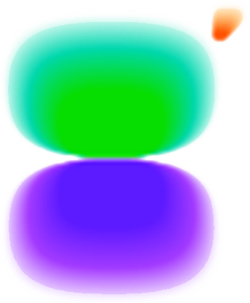

<!doctype html>
<html lang="en">
<head>
  <meta charset="UTF-8">
  <meta name="viewport" content="width=device-width, initial-scale=1.0">
  <meta name="robots" content="noindex, nofollow">
  <title>Logo Lab — Galent (experimental)</title>

  <!--
    ╔══════════════════════════════════════════════════════════════════╗
    ║  LOGO LAB — experimental motion prototype. NOT production code.    ║
    ║  Purpose: prove a cinematic hero animation of the Galent mark.     ║
    ║  Stack: React + GSAP + SVG/CSS via CDN. No build step. No Three.js.║
    ║  The logo is the repo's transparent galent-mark.png (no white bg). ║
    ╚══════════════════════════════════════════════════════════════════╝
  -->

  <!-- React + Babel (JSX in the browser — fine for a prototype) -->
  <script crossorigin src="https://unpkg.com/react@18/umd/react.production.min.js"></script>
  <script crossorigin src="https://unpkg.com/react-dom@18/umd/react-dom.production.min.js"></script>
  <script src="https://unpkg.com/@babel/standalone/babel.min.js"></script>
  <!-- GSAP (same version the rest of the site uses) -->
  <script src="https://cdn.jsdelivr.net/npm/gsap@3.13.0/dist/gsap.min.js"></script>

  <style>
    :root {
      --mark: url("assets/images/galent-mark.png");
      --contour: 150, 225, 255;        /* cool cyan contour ink */
      --bg-0: #05060c;
      --bg-1: #0b0c18;
    }
    * { box-sizing: border-box; }
    html, body { margin: 0; height: 100%; }
    body {
      background:
        radial-gradient(120% 90% at 50% 18%, #14122b 0%, var(--bg-1) 42%, var(--bg-0) 100%);
      color: #e8eaf2;
      font-family: "Plus Jakarta Sans", system-ui, -apple-system, sans-serif;
      overflow: hidden;
    }
    #root { height: 100vh; height: 100dvh; }

    /* ---- Scene / camera ---------------------------------------------- */
    .scene {
      position: fixed; inset: 0;
      display: grid; place-items: center;
      perspective: 1200px;
      overflow: hidden;
    }
    /* faint grid for depth */
    .scene::before {
      content: ""; position: absolute; inset: -20%;
      background-image:
        linear-gradient(rgba(255,255,255,.035) 1px, transparent 1px),
        linear-gradient(90deg, rgba(255,255,255,.035) 1px, transparent 1px);
      background-size: 46px 46px;
      mask: radial-gradient(70% 60% at 50% 45%, #000 30%, transparent 78%);
      opacity: .5; pointer-events: none;
    }

    /* central glow that intensifies as we approach the core */
    .core-glow {
      position: absolute; left: 50%; top: 46%;
      width: 60vmin; height: 60vmin; transform: translate(-50%, -50%) scale(var(--glow, .6));
      border-radius: 50%;
      background: radial-gradient(circle, rgba(150,210,255,.55) 0%, rgba(124,92,219,.25) 35%, transparent 70%);
      filter: blur(8px);
      opacity: var(--glow-op, 0); pointer-events: none; mix-blend-mode: screen;
    }

    /* full-viewport tunnel of rings (revealed in the final stage) */
    .tunnel {
      position: absolute; inset: -50%;
      background: repeating-radial-gradient(circle at 50% 50%,
        rgba(var(--contour), 0)   0,
        rgba(var(--contour), 0)   34px,
        rgba(var(--contour), .55) 36px,
        rgba(var(--contour), 0)   58px);
      transform: scale(var(--t, 1));
      transform-origin: 50% 46%;
      opacity: var(--tunnel-op, 0);
      mix-blend-mode: screen; pointer-events: none;
      will-change: transform;
    }

    /* ---- Logo -------------------------------------------------------- */
    .logo {
      position: relative;
      width: 300px; height: 370px;          /* matches mark aspect ~320x395 */
      transform: scale(var(--logo-scale, 1));
      will-change: transform;
    }
    /* two stacked full-size copies, each revealing one block via clip */
    .block { position: absolute; inset: 0; will-change: transform; }
    .block.top    { clip-path: inset(0 0 53% 0); }   /* green + orange cluster */
    .block.bottom { clip-path: inset(47% 0 0 0); }   /* purple body            */

    .block .mark {
      position: absolute; inset: 0;
      width: 100%; height: 100%;
      object-fit: contain;
      filter: drop-shadow(0 10px 40px rgba(124,92,219,.35));
    }

    /* contour rings, clipped to the logo's own alpha via mask */
    .rings {
      position: absolute; inset: 0;
      -webkit-mask: var(--mark) center / contain no-repeat;
              mask: var(--mark) center / contain no-repeat;
      background: repeating-radial-gradient(circle at 50% 46%,
        rgba(var(--contour), 0)               0,
        rgba(var(--contour), 0)               calc(var(--ring-gap, 22px) - 1.6px),
        rgba(var(--contour), .85)             calc(var(--ring-gap, 22px) - 1.6px),
        rgba(var(--contour), .85)             var(--ring-gap, 22px));
      opacity: var(--ring-op, 0);
      mix-blend-mode: screen;
      will-change: opacity, background;
    }

    /* ---- Lab controls ------------------------------------------------ */
    .hud {
      position: fixed; left: 50%; bottom: 22px; transform: translateX(-50%);
      display: flex; align-items: center; gap: 14px;
      padding: 10px 14px; border-radius: 999px;
      background: rgba(12,14,26,.6); border: 1px solid rgba(255,255,255,.1);
      backdrop-filter: blur(10px); z-index: 20;
      font-size: 13px; letter-spacing: .2px;
    }
    .hud button {
      appearance: none; border: 1px solid rgba(255,255,255,.16);
      background: rgba(255,255,255,.06); color: #e8eaf2;
      padding: 8px 14px; min-height: 36px; border-radius: 999px;
      font: inherit; cursor: pointer; transition: background .2s ease, border-color .2s ease;
    }
    .hud button:hover { background: rgba(255,255,255,.14); border-color: rgba(255,255,255,.3); }
    .hud button:focus-visible { outline: 2px solid #8fd0ff; outline-offset: 2px; }
    .hud input[type="range"] { width: 240px; accent-color: #8fd0ff; cursor: pointer; }
    .stage {
      position: fixed; top: 22px; left: 50%; transform: translateX(-50%);
      font-family: ui-monospace, "JetBrains Mono", monospace;
      font-size: 12px; letter-spacing: 2px; text-transform: uppercase;
      color: rgba(232,234,242,.7); z-index: 20; pointer-events: none;
      text-align: center;
    }
    .stage b { color: #9fd6ff; }
    .badge {
      position: fixed; top: 20px; left: 22px; z-index: 20;
      font-family: ui-monospace, monospace; font-size: 11px; letter-spacing: 1.5px;
      color: rgba(232,234,242,.4); text-transform: uppercase;
    }

    @media (prefers-reduced-motion: reduce) {
      .tunnel { display: none; }
    }
  </style>
</head>
<body>
  <div id="root"></div>

  <script type="text/babel">
    const { useEffect, useRef, useState, useCallback } = React;

    // Human-readable stage captions, keyed by the GSAP label that opens them.
    const STAGE_TEXT = {
      rest:     "01 · The mark, at rest",
      separate: "02 · The blocks part",
      reunite:  "03 · They return",
      contour:  "04 · Contours surface inside the shapes",
      densify:  "05 · Layers deepen · the mark grows",
      enter:    "06 · Entering the intelligence core",
      calm:     "07 · Stillness",
    };

    function LogoLab() {
      const scene  = useRef(null);
      const logo   = useRef(null);
      const top    = useRef(null);
      const bottom = useRef(null);
      const tunnel = useRef(null);
      const glow   = useRef(null);
      const tlRef  = useRef(null);
      const tunnelLoop = useRef(null);

      const [stage, setStage]   = useState(STAGE_TEXT.rest);
      const [playing, setPlay]  = useState(true);
      const [scrub, setScrub]   = useState(0);

      // Map the timeline's current time → the active stage caption.
      const updateStage = useCallback((tl) => {
        const t = tl.time();
        const labels = tl.labels;
        let current = "rest";
        let best = -1;
        for (const name in labels) {
          if (labels[name] <= t + 0.001 && labels[name] >= best) { best = labels[name]; current = name; }
        }
        setStage(STAGE_TEXT[current] || STAGE_TEXT.rest);
      }, []);

      useEffect(() => {
        const reduce = window.matchMedia &&
          window.matchMedia("(prefers-reduced-motion: reduce)").matches;

        const rings = [top.current, bottom.current].map(b => b.querySelector(".rings"));

        // A gentle, always-running tunnel "travel" — only made visible in stage 6.
        tunnelLoop.current = gsap.fromTo(tunnel.current,
          { "--t": 1 },
          { "--t": 1.9, duration: 5, ease: "none", repeat: -1 });
        tunnelLoop.current.pause();

        const tl = gsap.timeline({
          defaults: { ease: "power3.inOut" },
          paused: true,
          onUpdate() { updateStage(tl); setScrub(tl.progress() * 1000); },
        });
        tlRef.current = tl;

        // Baselines so GSAP animates CSS vars from a known start (an unset
        // custom property can otherwise be read as 0 and cause a jump).
        gsap.set(logo.current,   { "--logo-scale": 1, opacity: 1 });
        gsap.set(tunnel.current, { "--tunnel-op": 0, "--t": 1 });
        gsap.set(rings,          { "--ring-op": 0, "--ring-gap": "24px" });
        gsap.set(glow.current,   { "--glow-op": 0, "--glow": 0.55 });

        // ── Stage 1 — at rest ─────────────────────────────────────────
        tl.addLabel("rest")
          .to({}, { duration: 1.0 });

        // ── Stage 2 — the blocks part (subtle, ~25px) ─────────────────
        tl.addLabel("separate")
          .to(top.current,    { y: -26, duration: 1.5, ease: "power2.out" }, "separate")
          .to(bottom.current, { y:  26, duration: 1.5, ease: "power2.out" }, "separate");

        // ── Stage 3 — they slowly return ──────────────────────────────
        tl.addLabel("reunite", "+=0.5")
          .to([top.current, bottom.current], { y: 0, duration: 1.6, ease: "power2.inOut" }, "reunite");

        // ── Stage 4 — contour rings surface inside the shapes ─────────
        tl.addLabel("contour", "+=0.25")
          .to(rings, { "--ring-op": 0.9, duration: 1.6 }, "contour")
          .fromTo(rings, { "--ring-gap": "26px" }, { "--ring-gap": "16px", duration: 2.4 }, "contour")
          .to(glow.current, { "--glow-op": 0.35, duration: 1.8 }, "contour");

        // ── Stage 5 — layers densify, the mark enlarges ───────────────
        tl.addLabel("densify", "+=0.2")
          .to(rings, { "--ring-gap": "8px", duration: 2.2 }, "densify")
          .to(logo.current, { "--logo-scale": 1.35, duration: 2.2, ease: "power1.inOut" }, "densify")
          .to(glow.current, { "--glow-op": 0.6, "--glow": 0.9, duration: 2.2 }, "densify");

        // ── Stage 6 — camera into center · contours become a tunnel ───
        tl.addLabel("enter", "+=0.15")
          .to(rings, { "--ring-gap": "4px", duration: 3.0, ease: "power2.in" }, "enter")
          .to(logo.current, { "--logo-scale": 7.5, duration: 3.2, ease: "power2.in" }, "enter")
          .to(logo.current, { opacity: 0.0, duration: 1.2, ease: "power1.in" }, "enter+=2.0")
          .to(tunnel.current, { "--tunnel-op": 0.9, duration: 2.0 }, "enter+=0.6")
          .to(glow.current, { "--glow-op": 0.95, "--glow": 1.6, duration: 3.0 }, "enter")
          .add(() => { if (!reduce) tunnelLoop.current.play(); }, "enter+=0.6");

        // ── Stage 7 — stillness ───────────────────────────────────────
        tl.addLabel("calm", "+=0.2")
          .to(glow.current, { "--glow-op": 0.7, duration: 1.6, ease: "sine.inOut" }, "calm")
          .to(tunnel.current, { "--tunnel-op": 0.5, duration: 1.6, ease: "sine.inOut" }, "calm");

        if (reduce) {
          // Respect reduced-motion: present a calm, static composed frame.
          tl.progress(1);
          tunnelStop();
          setPlay(false);
        } else {
          tl.play();
        }

        function tunnelStop() { if (tunnelLoop.current) tunnelLoop.current.pause(); }

        return () => { tl.kill(); if (tunnelLoop.current) tunnelLoop.current.kill(); };
      }, [updateStage]);

      const replay = () => {
        const tl = tlRef.current; if (!tl) return;
        if (tunnelLoop.current) tunnelLoop.current.pause().progress(0);
        tl.restart(); setPlay(true);
      };
      const toggle = () => {
        const tl = tlRef.current; if (!tl) return;
        if (tl.paused() || !playing) { tl.play(); setPlay(true); }
        else { tl.pause(); setPlay(false); }
      };
      const onScrub = (e) => {
        const tl = tlRef.current; if (!tl) return;
        tl.pause(); setPlay(false);
        tl.progress(Number(e.target.value) / 1000);
        setScrub(Number(e.target.value));
      };

      return (
        <React.Fragment>
          <div className="badge">logo lab · experimental</div>
          <div className="stage" dangerouslySetInnerHTML={{ __html: stage.replace(/^(\d+)/, "<b>$1</b>") }} />

          <div className="scene" ref={scene}>
            <div className="tunnel" ref={tunnel} />
            <div className="core-glow" ref={glow} />

            <div className="logo" ref={logo}>
              <div className="block top" ref={top}>
                
                <div className="rings" />
              </div>
              <div className="block bottom" ref={bottom}>
                
                <div className="rings" />
              </div>
            </div>
          </div>

          <div className="hud" role="group" aria-label="Animation controls">
            <button onClick={replay}>↺ Replay</button>
            <button onClick={toggle}>{playing ? "⏸ Pause" : "▶ Play"}</button>
            <input type="range" min="0" max="1000" value={scrub}
                   onChange={onScrub} aria-label="Scrub timeline" />
          </div>
        </React.Fragment>
      );
    }

    ReactDOM.createRoot(document.getElementById("root")).render(<LogoLab />);
  </script>
</body>
</html>
